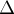

MAXimal
добавлено: 10 Jun 2008 19:41
редактировано: 24 Aug 2011 1:19
Содержание [скрыть]
Алгоритм Флойда-Уоршелла нахождения кратчайших путей между всеми парами вершин
Дан ориентированный или неориентированный взвешенный граф  с
с  вершинами. Требуется найти значения всех величин — длины кратчайшего пути из вершины
вершинами. Требуется найти значения всех величин — длины кратчайшего пути из вершины  в вершину
в вершину  .
.
Предполагается, что граф не содержит циклов отрицательного веса (тогда ответа между некоторыми парами вершин может просто не существовать — он будет бесконечно маленьким).
Этот алгоритм был одновременно опубликован в статьях Роберта Флойда (Robert Floyd) и Стивена Уоршелла (Варшалла) (Stephen Warshall) в 1962 г., по имени которых этот алгоритм и называется в настоящее время. Впрочем, в 1959 г. Бернард Рой (Bernard Roy) опубликовал практически такой же алгоритм, но его публикация осталась незамеченной.
Описание алгоритма
Ключевая идея алгоритма — разбиение процесса поиска кратчайших путей на фазы.
Перед  -ой фазой () считается, что в матрице расстояний
-ой фазой () считается, что в матрице расстояний ![d[][]](../tex2png/cache/2108d8213526c488460c3eb1fe11c115.png) сохранены длины таких кратчайших путей, которые содержат в качестве внутренних вершин только вершины из множества (вершины графа мы нумеруем, начиная с единицы).
сохранены длины таких кратчайших путей, которые содержат в качестве внутренних вершин только вершины из множества (вершины графа мы нумеруем, начиная с единицы).
Иными словами, перед -ой фазой величина ![d[i][j]](../tex2png/cache/a18f11689b09b23faa10c78d6b244cf8.png) равна длине кратчайшего пути из вершины в вершину , если этому пути разрешается заходить только в вершины с номерами, меньшими (начало и конец пути не считаются).
равна длине кратчайшего пути из вершины в вершину , если этому пути разрешается заходить только в вершины с номерами, меньшими (начало и конец пути не считаются).
Легко убедиться, что чтобы это свойство выполнилось для первой фазы, достаточно в матрицу расстояний записать матрицу смежности графа: — стоимости ребра из вершины в вершину . При этом, если между какими-то вершинами ребра нет, то записать следует величину "бесконечность" . Из вершины в саму себя всегда следует записывать величину  , это критично для алгоритма.
, это критично для алгоритма.
Пусть теперь мы находимся на -ой фазе, и хотим пересчитать матрицу таким образом, чтобы она соответствовала требованиям уже для  -ой фазы. Зафиксируем какие-то вершины и . У нас возникает два принципиально разных случая:
-ой фазы. Зафиксируем какие-то вершины и . У нас возникает два принципиально разных случая:
- Кратчайший путь из вершины в вершину , которому разрешено дополнительно проходить через вершины , совпадает с кратчайшим путём, которому разрешено проходить через вершины множества .
В этом случае величина
не изменится при переходе с -ой на -ую фазу. - "Новый" кратчайший путь стал лучше "старого" пути.
Это означает, что "новый" кратчайший путь проходит через вершину
. Сразу отметим, что мы не потеряем общности, рассматривая далее только простые пути (т.е. пути, не проходящие по какой-то вершине дважды).Тогда заметим, что если мы разобьём этот "новый" путь вершиной
на две половинки (одна идущая , а другая —  ), то каждая из этих половинок уже не заходит в вершину . Но тогда получается, что длина каждой из этих половинок была посчитана ещё на
), то каждая из этих половинок уже не заходит в вершину . Но тогда получается, что длина каждой из этих половинок была посчитана ещё на  -ой фазе или ещё раньше, и нам достаточно взять просто сумму , она и даст длину "нового" кратчайшего пути.
-ой фазе или ещё раньше, и нам достаточно взять просто сумму , она и даст длину "нового" кратчайшего пути.
Объединяя эти два случая, получаем, что на -ой фазе требуется пересчитать длины кратчайших путей между всеми парами вершин и следующим образом:
new_d[i][j] = min (d[i][j], d[i][k] + d[k][j]);
Таким образом, вся работа, которую требуется произвести на -ой фазе — это перебрать все пары вершин и пересчитать длину кратчайшего пути между ними. В результате после выполнения -ой фазы в матрице расстояний будет записана длина кратчайшего пути между и , либо , если пути между этими вершинами не существует.
Последнее замечание, которое следует сделать, — то, что можно не создавать отдельную матрицу для временной матрицы кратчайших путей на -ой фазе: все изменения можно делать сразу в матрице . В самом деле, если мы улучшили (уменьшили) какое-то значение в матрице расстояний, мы не могли ухудшить тем самым длину кратчайшего пути для каких-то других пар вершин, обработанных позднее.
Асимптотика алгоритма, очевидно, составляет  .
.
Реализация
На вход программе подаётся граф, заданный в виде матрицы смежности — двумерного массива размера  , в котором каждый элемент задаёт длину ребра между соответствующими вершинами.
, в котором каждый элемент задаёт длину ребра между соответствующими вершинами.
Требуется, чтобы выполнялось для любых .
for (int k=0; k<n; ++k) for (int i=0; i<n; ++i) for (int j=0; j<n; ++j) d[i][j] = min (d[i][j], d[i][k] + d[k][j]);
Предполагается, что если между двумя какими-то вершинами нет ребра, то в матрице смежности было записано какое-то большое число (достаточно большое, чтобы оно было больше длины любого пути в этом графе); тогда это ребро всегда будет невыгодно брать, и алгоритм сработает правильно.
Правда, если не принять специальных мер, то при наличии в графе рёбер отрицательного веса, в результирующей матрице могут появиться числа вида  ,
,  , и т.д., которые, конечно, по-прежнему означают, что между соответствующими вершинами вообще нет пути. Поэтому при наличии в графе отрицательных рёбер алгоритм Флойда лучше написать так, чтобы он не выполнял переходы из тех состояний, в которых уже стоит "нет пути":
, и т.д., которые, конечно, по-прежнему означают, что между соответствующими вершинами вообще нет пути. Поэтому при наличии в графе отрицательных рёбер алгоритм Флойда лучше написать так, чтобы он не выполнял переходы из тех состояний, в которых уже стоит "нет пути":
for (int k=0; k<n; ++k) for (int i=0; i<n; ++i) for (int j=0; j<n; ++j) if (d[i][k] < INF && d[k][j] < INF) d[i][j] = min (d[i][j], d[i][k] + d[k][j]);
Восстановление самих путей
Легко поддерживать дополнительную информацию — так называемых "предков", по которым можно будет восстанавливать сам кратчайший путь между любыми двумя заданными вершинами в виде последовательности вершин.
Для этого достаточно кроме матрицы расстояний поддерживать также матрицу предков ![p[][]](../tex2png/cache/901ba0328af44f1e788411ee0b571dbf.png) , которая для каждой пары вершин будет содержать номер фазы, на которой было получено кратчайшее расстояние между ними. Понятно, что этот номер фазы является не чем иным, как "средней" вершиной искомого кратчайшего пути, и теперь нам просто надо найти кратчайший путь между вершинами и , а также между и . Отсюда получается простой рекурсивный алгоритм восстановления кратчайшего пути.
, которая для каждой пары вершин будет содержать номер фазы, на которой было получено кратчайшее расстояние между ними. Понятно, что этот номер фазы является не чем иным, как "средней" вершиной искомого кратчайшего пути, и теперь нам просто надо найти кратчайший путь между вершинами и , а также между и . Отсюда получается простой рекурсивный алгоритм восстановления кратчайшего пути.
Случай вещественных весов
Если веса рёбер графа не целочисленные, а вещественные, то следует учитывать погрешности, неизбежно возникающие при работе с типами с плавающей точкой.
Применительно к алгоритму Флойда неприятным спецэффектом этих погрешностей становится то, что найденные алгоритмом расстояния могут уйти сильно в минус из-за накопившихся ошибок. В самом деле, если на первой фазе имела место ошибка , то на второй итерации эта ошибка уже может превратиться в , на третьей — в , и так далее.
Чтобы этого не происходило, сравнения в алгоритме Флойда следует делать с учётом погрешности:
if (d[i][k] + d[k][j] < d[i][j] - EPS) d[i][j] = d[i][k] + d[k][j];
Случай отрицательных циклов
Если в графе есть циклы отрицательного веса, то формально алгоритм Флойда-Уоршелла неприменим к такому графу.
На самом же деле, для тех пар вершин и , между которыми нельзя зайти в цикл отрицательного вес, алгоритм отработает корректно.
Для тех же пар вершин, ответа для которых не существует (по причине наличия отрицательного цикла на пути между ними), алгоритм Флойда найдёт в качестве ответа какое-то число (возможно, сильно отрицательное, но не обязательно). Тем не менее, можно улучшить алгоритм Флойда, чтобы он аккуратно обрабатывал такие пары вершин и выводил для них, например, .
Для этого можно сделать, например, следующий критерий "не существования пути". Итак, пусть на данном графе отработал обычный алгоритм Флойда. Тогда между вершинами и не существует кратчайшего пути тогда и только тогда, когда найдётся такая вершина  , достижимая из и из которой достижима , для которой выполняется .
, достижимая из и из которой достижима , для которой выполняется .
Кроме того, при использовании алгоритма Флойда для графов с отрицательными циклами следует помнить, что возникающие в процессе работы расстояния могут сильно уходить в минус, экспоненциально с каждой фазой. Поэтому следует принять меры против целочисленного переполнения, ограничив все расстояния снизу какой-нибудь величиной (например, ).
Более подробно об этой задаче см. отдельную статью: "Нахождение отрицательного цикла в графе".